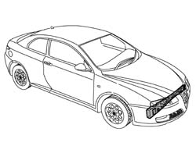
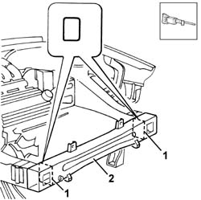
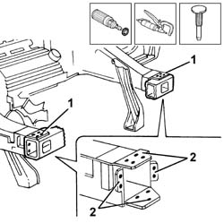
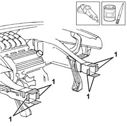
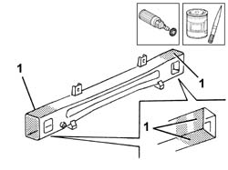
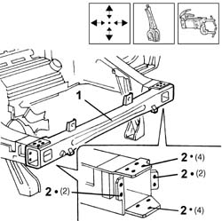
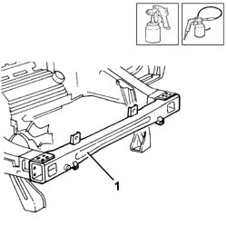

7210A16 WING LOWER BEAM
- Path
- Procedures > 72 PANELS AND FRAME > 7210 REMOVING REFITTING > 7210A STRUCTURAL ELEMENTS (FRONT PART) > 7210A16 WING LOWER BEAM
- Kind
- repair procedure (removal / refitting; the operation number is the code)
- Applies to
- all engines; all production periods
- Interactive page
- https://sloeber94.github.io/elrnDB-aGt/en/#/125002024
Applies to: all engines; all production periods
 Removing
Removing
 Refitting
RefittingOp. 7210A15 R.R. HEADLAMP HOUSING/FRONT WING CROSSMEMBER
Check that the components connected are not distorted by checking the bodyshell alignment measurements using suitable equipment (gauges, templates or jigs).
Carry out any bodyshell straightening operations before cutting the component.

Applies to: all engines; all production periods
1. Cut using the hack sawing machine following the cutting lines shown in the diagram.
2. Remove the front crossmember from its housing.

Applies to: all engines; all production periods
1. Using a rotary blade, clean the areas to highlight the spot welds.
2. Use a chamfering machine to remove the spot welds.
- Use a hammer and chisel to remove the panel offcuts.

Applies to: all engines; all production periods
- Remove the spot weld residues using a disc grinder.
1. Apply electro-galvanizing paint.

Applies to: all engines; all production periods
- Remove the anti-corrosion treatment from the weld areas using a rotary brush.
1. Apply the electro-galvanizing paint to the weld areas.

Applies to: all engines; all production periods
Refitting
Removing1. Position the replacement part correctly and secure it using self-locking clamps.
2. Use a spot welder in the areas shown in the diagram.

Applies to: all engines; all production periods
1. Proceed with the painting stage.
Proceed with the waxing stage.

Applies to: all engines; all production periods